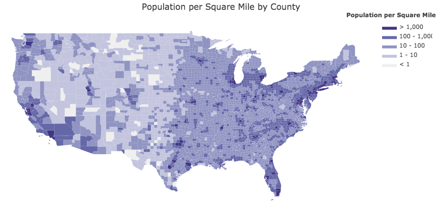

Background
Using the FIPS, Land Area, and HCAHPS data, we were able to get an intial understanding of the dataset we are working with. This shows us the concentration of completed surveys at the county level, the number of hospitals surveyed by county, the population by county, and the population per square mile by county. We can see that the number of completed surveys by county mirrors the population by county.

